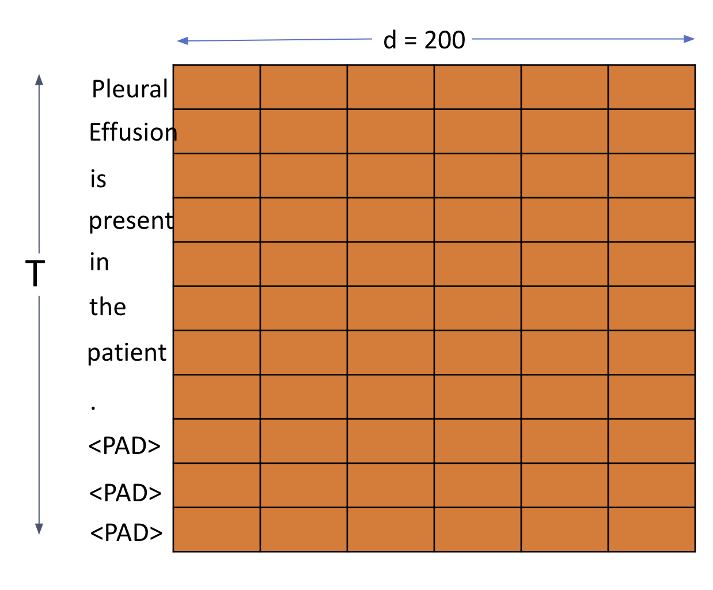
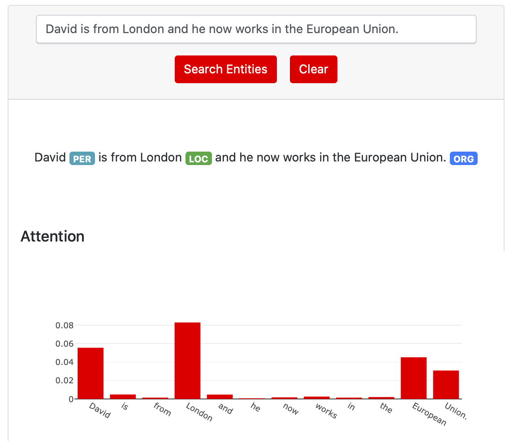
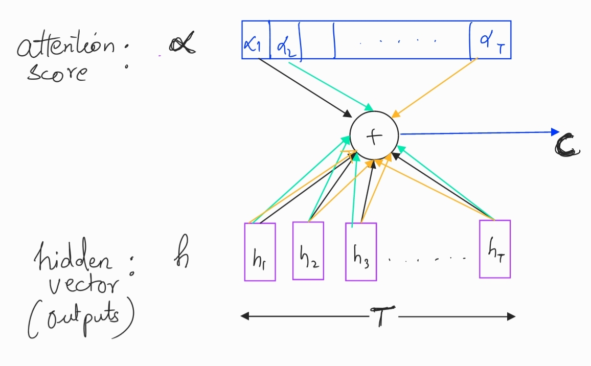

Encoder - Attention - Decoder
Published:
Explaining Attention Network in Encoder-Decoder setting using Recurrent Neural Networks
Encoder-Decoder paradigm has become extremely popular in deep learning particularly in the space of natural language processing. Attention modules complement encoder-decoder architecture to make learning more close to humans way. I present a gentle introduction to encode-attend-decode. I provide motivation for each block and explain the math governing the model. Further, I break down the code into digestible bits for each mathematical equation. While there are good explanations to attention mechanism for machine translation task, I will try to explain the same for a sequence tagging task (Named Entity Recognition).
 Encode-Attend-Decode Architecture
Encode-Attend-Decode ArchitectureIn the next part of the series, I will use the architecture explained here to solve the problem of Named Entity Recognition
Encoder
Motivation
Encode the source/input sequence into a meaningful representation containing information about the input sentence. In case of a problem involving images, this could be penultimate dense layer of a convolutional neural network. We’ll see handling textual input in more detail.
Recurrent Neural Networks (RNN) are extremely suited to model sequential or temporal data. Text fits this category well. When a human reads a sentence, they process the current word they are reading $x_t$ while remembering what they had processed until then ${h_{t-1}}$. We model this using an RNN as follows
\[h_t = RNN(h_{t-1},x_{t})\]where, $h_t$ is the hidden state of RNN (GRU/LSTM) at $t^{th}$ time-step. ${x_t}$ is a vectorial representation of the word (e.g. Word vector, Bag of Words etc.).
For t = T, $h_T$ becomes our thought vector. In absence of an attention network, this thought vector is the input to decoder at decoder’s time-step $0$. i.e.
we’ll talk more about $s_t$ in decoder section.
Implementation details with mathematical explanation and code
Implementing encoder is a 2 step process.
-
If each word in the sentence is converted to a d dimension word vector, $x_i \in R^d$. Every sentence is normalized to same length T, typically equal to the longest sentence in the corpus. This is done by padding <PAD> token to shorter sentences. Consequently, each sentence in our dataset $Sent^{(i)}$ with T words becomes $Sent^{(i)} \in R^{T \times d} $. Following picture helps me visualize this

This is easy to translate to code
#MAX_SEQUENCE_LENGTH = T words_input = Input(dtype='int32', shape=[MAX_SEQUENCE_LENGTH]) #words_input = [1,T] :1 = batchsize (for simplifying explanation) #EMBEDDING_DIM = d (200 for used pretrained word2vec) #embedding_tensor = weights from pretrained embedding. Dim: |Vocab| x d x = Embedding(words_vocab_size + 1, EMBEDDING_DIM, weights=[embedding_tensor], input_length=MAX_SEQUENCE_LENGTH, trainable=False)(words_input) #x = vectorized sentence (Sent_i):[1,T,d] :1 = batchsize (for simplifying explanation) -
If there are $h$ units in each RNN (LSTM/GRU) block, each hidden RNN unit will produce an $h$ dimensional output called hidden state. (Additionally we also get another output called cell state if using an LSTM. I’ll write another blog-post detailing workings of LSTMs and GRUs, meanwhile there’s an excellent explanation here). Each $h_t \in R^h$. Note there are always T hidden units, one corresponding to each word. This would mean that output of the RNN block (RNN block comprises of all the $T$ hidden units together), will be in $R^{T \times h}$
#num_hidden_units = h outputs = GRU(num_hidden_units, return_sequences=True, dropout=0.5, name='RNN_Layer')(x) #outputs = [1,T,h] :1 = batchsizeIn absence of the attention module, we only care for RNN output from last time-step $T$ as that ($h_T$) will be our thought vector (input to the decoder). For this, set
return_sequences = False
Attention
Motivation
The basic attention network courtesy Bahdanau et al. was originally proposed to solve and maximize the machine translation performance. However, it has been shown to perform exceedingly well in a wide variety of other downstream tasks as well such as NER, question answering, image classification etc.
Use of a fixed-length vector is a bottleneck in improving the performance of this basic encoder-decoder architecture, and propose to extend this by allowing a model to automatically (soft-)search for parts of a source sentence that are relevant to predicting a target word, without having to form these parts as a hard segment explicitly.
A very primitive intuition to this idea of attention is to model human behavior towards sequence processing. Consider the task of question answering. The objective is to answer questions based upon understanding of a document (paragraph). The encoder encodes the entire sentence into one fixed dimension vector $h_T, (thought vector)$. It’s unreasonable to expect this fixed vector to be equally effective in encoding the information from early time-steps $t \lt\lt T$ just as well as it would at $t\approx T$. RNN’s are prone to vanishing gradients hence making such a learning even harder.
A human on the other hand would not typically read the entire document (input) in order to make inferences. Humans pay selective focus (attention) to different parts of the sentence guided by the objective of the downstream task. So to answer a question about authorship of a document, a human reader will focus primarily on beginning of the document. An attention network tries to emulate this by learning to attend to different parts of the sentence with varying intensity (energy).
The ability of attention network to assign higher scores to important phrases in texts and patches in images makes for interesting visualization and provides an interesting way for model explanation. In the case of Named Entity Recognition, the hope is that an attention module will learn to attend to most significant words, phrases and tokens that guide the classification of each word into classes (PER, MISC, LOC, ORG). In essence, we should see high attention score for words that belong to one of the named entity. For an example sentence to detect named entity, attention scores for relevant classes may look like following. You may play with more sentences here

Implementation details with mathematical explanation and code
For each time-step of the decoder, the attention mechanism computes a weighted sum of importance over all the words in the input sequence. In place of the thought-vector, this weighted sum is fed to the decoder. Attention mechanism proceeds through a three step process.
-
Calculation of Energy Scores $ e_{jt} $
This is defined as importance of the $j^{th}$ word when making inference about the $t^{th}$ word of the decoder. Bahdanau described this for machine translation task where $j \neq t$. In our example of NER however, $j=t $ since there exists a label (PER, MISC, LOC, ORG or None) for each $t \in (1,T)$ of our input sentence. Hence, we’ll have for each class in our labelset, an energy score for every word in the input sentence. For a sentence,
\[e_{jt} = V_a^T tanh(W_as_{t-1}+U_ah_j)\]I like London, we’ll have a 3 $(T)$ dimensional vector. $ e_{jt} $ is defined as followingwhere $s_{t-1}$ is the previous time-step of the decoder.
\[e_{j} = V_a^T tanh(U_ah_j)\]
In our example, we can ignore $s_{t-1}$ as there is no dependence on predicted class (tag) of previous word on predicting tag of current word by the decoder. So our energy score $e_j$ becomesWe’ll rewrite this equation to make dimensions consistent in this post
\[e_{j} = [tanh(h_jU_a)]V_a^T\]Let’s look at the dimensions
$h_j \in R^h$ i.e. $R^{1 \times h}$(see encoder)
$U_a \in R^{h \times d_a}$
$h_jU_a \in R^{1 \times d_a }$
$tanh(h_jU_a) \in R^{1 \times d_a}$
$V_a \in R^{1 \times d_a} $
$V_a^T \in R^{d_a \times 1} $
$[tanh(U_ah_j)]V_a^T \in R^{1}$
$d_a$ is usually chosen as $h/2$We get a scalar energy score for each word. For entire sequence of $T$ words, our $h \in R^{h \times t}$. Similarly, in all other dimensions 1 is replaced by $T$. Ultimately, we get a $T$ dimensional energy vector with an energy score scalar for every word in our sentence. Let’s see how to code this
#hidden layer = tanh(Ua x h), outputs: from encoder [1,T,h] #hidden_layer :[1,T,d_a] hidden_layer = Dense(d_a, activation='tanh')(outputs) #energy vector = (tanh(h x Ua)).Va #energy_vector : [1,T,1] energy_vector = Dense(1, activation=None)(hidden_layer) -
Calculation of attention scores $ \alpha_{j} $
In deep learning, we often normalize scores into probabilities by taking softmax. This helps us make more intuitive sense of the numbers yielded. Keeping up with this spirit, we convert our energy scores to attention scores as \(\alpha_j = softmax(e_j)\) This yields an attention vector in $R^T$ with an attention score corresponding to each word in the input sentence. This attention vector is typically used for visualizing model’s learning.
#attention_vector : [1,T] attention_vector = Softmax(name='attention_vector')(energy_vector) -
Calculation of context vector c
Finally we calculate the context vector that is the attention weighted sum of learned representations of words by the encoder. In case of an NER, this context vector is fed to the decoder and helps the decoder how much focus (attention) it should pay to each word when deciding the class label for each word in the input sentence. (In a machine translation setting, each time-step (t) of the decoder gets a different context vector $c_t$).
\[c = \sum_{j=1}^T \alpha_jh_j\]Context VectorFrom the figure, it’s clear that each $c_j$ will be a $h \times T$ dimension matrix (same as outputs from encoder).
#Repeating and transposing attention_vector #to make matrix multiplication with outputs possible attention = RepeatVector(num_hidden_units)(attention_vector) attention = Permute([2, 1])(attention) context = Multiply()([outputs, attention])
Decoder
Motivation
Now that we have the context vector, which seems to be a more meaningful and powerful way to encode the source sentences, we are ready to make inferences. The choice of the decoder architecture is governed by the downstream task at hand. When the objective is to generate text (like in machine translation or text summarization), often the decoder is made with an RNN. The hidden states of this decoder RNN are denoted by $s_t$. In our example of NER, our decoder will be simply a dense, fully connected layer with softmax to out prediction probabilities. A more complex variant of decoder for the same problem is also possible.
Implementation details with mathematical explanation and code
Keeping the decoder simple, we pass our context vectors through a fully connected layer followed by a softmax layer. While the number of units in the fully connected layer can be chosen arbitrarily, the softmax is equal to the number of possible classes. In our example, this would be all possible named entity tags.
fc1 = Dense(num_fc_units)(encoding)
fc2 = Dense(class_count)(fc1)
out = Softmax(name='prediction')(fc2)
Conclusion
Presented here is an overview of the vanilla attention network by Bahdanau et al. This blog-post presents a survey on other variants of attention and an introduction to Transformers.
Leave a Comment